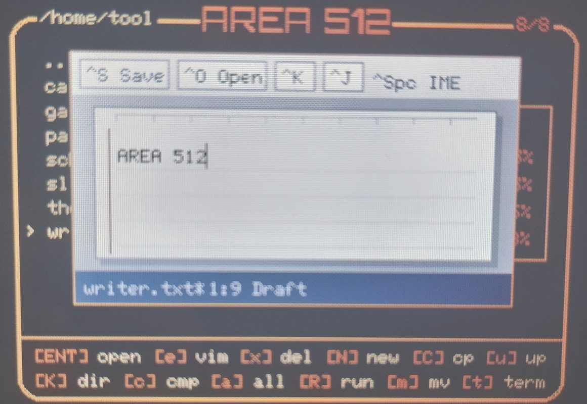
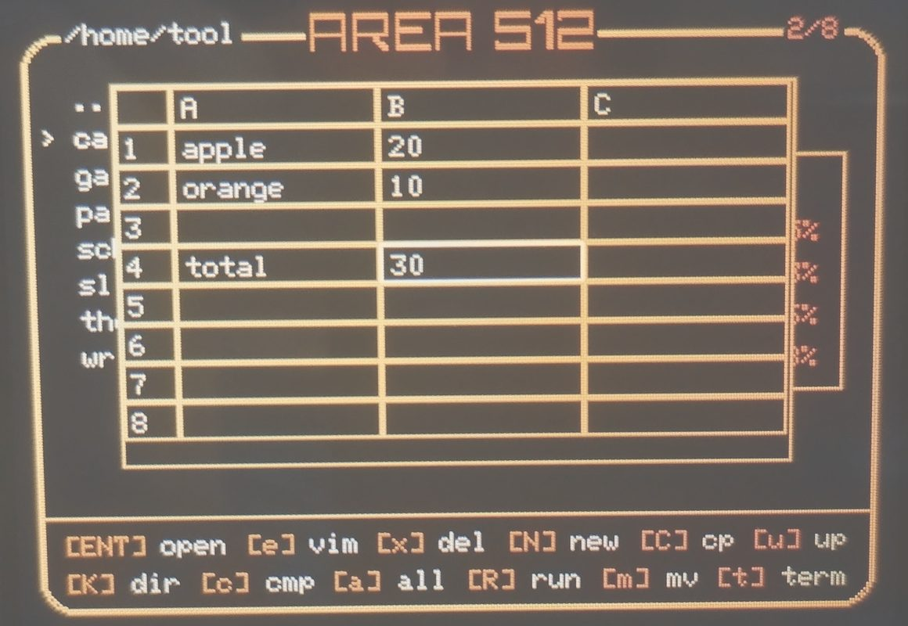
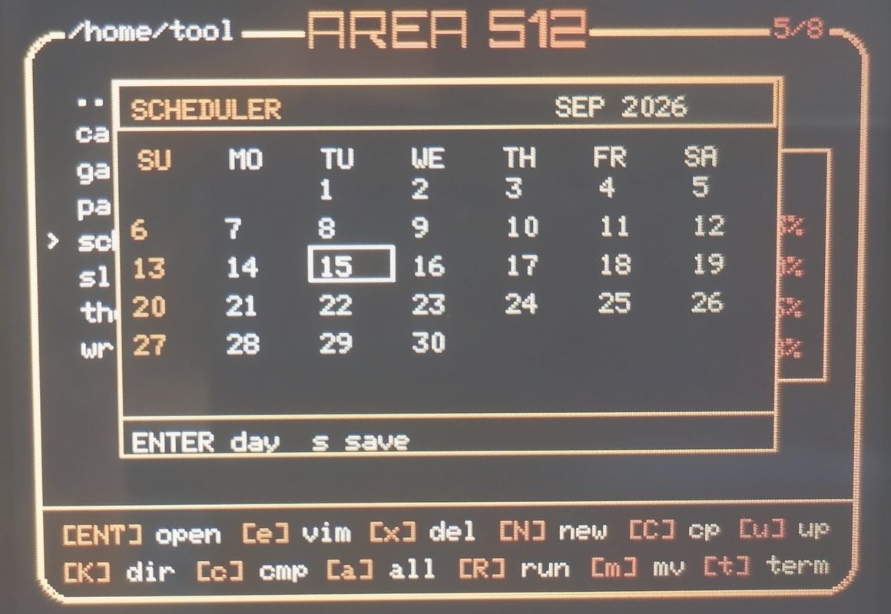
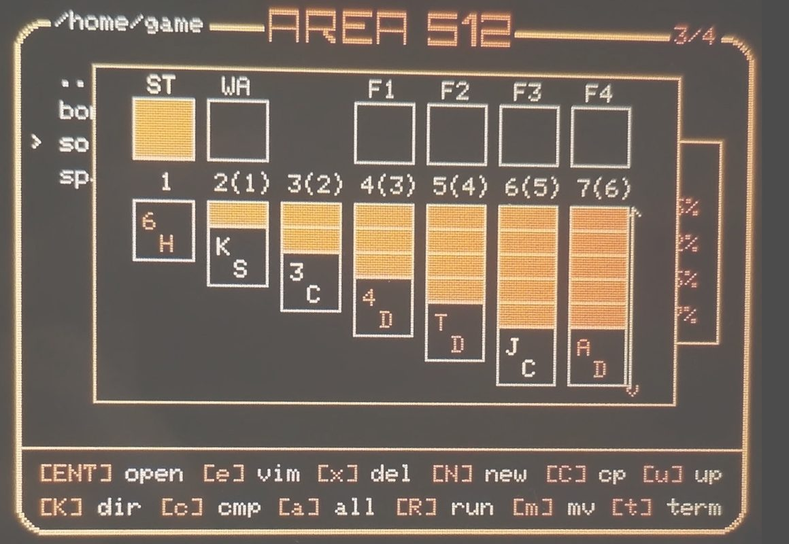
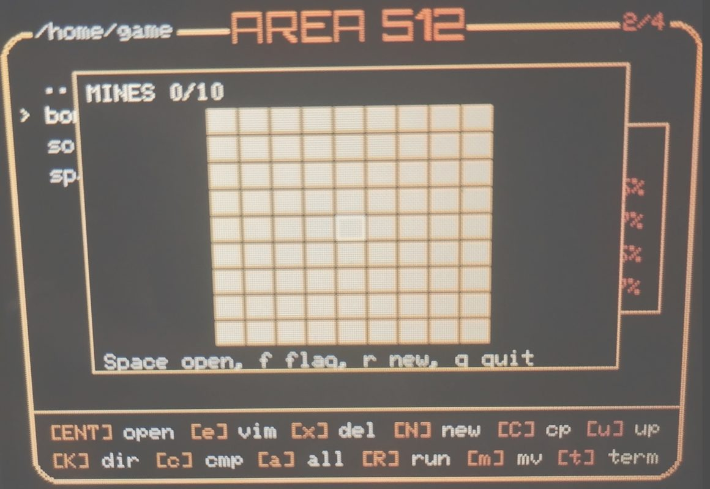
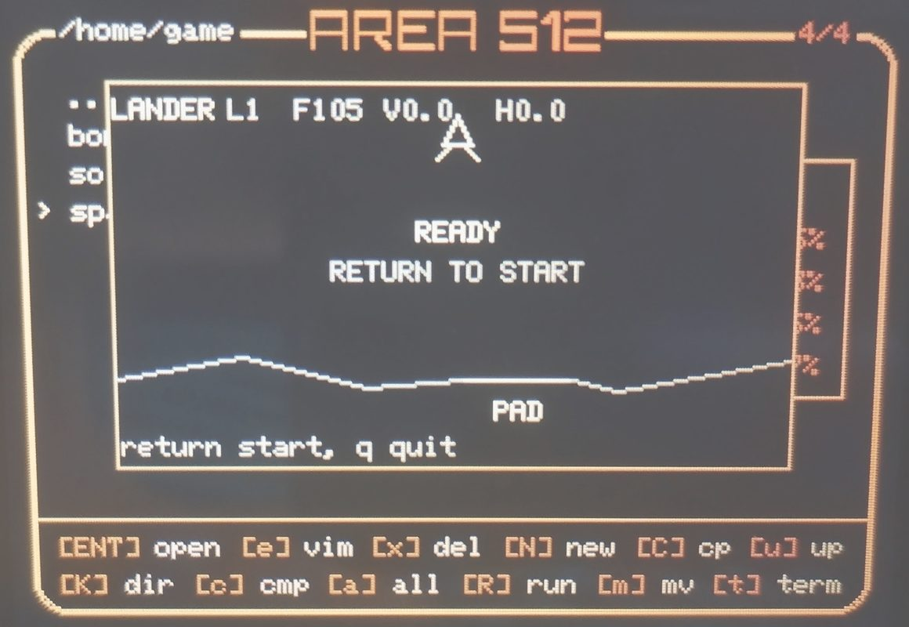
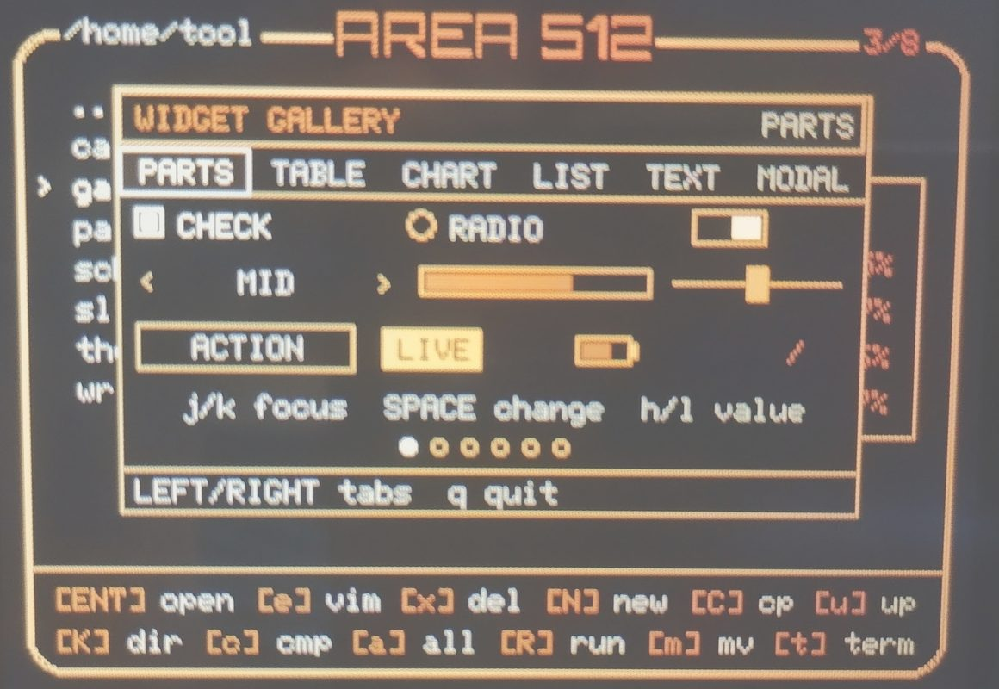
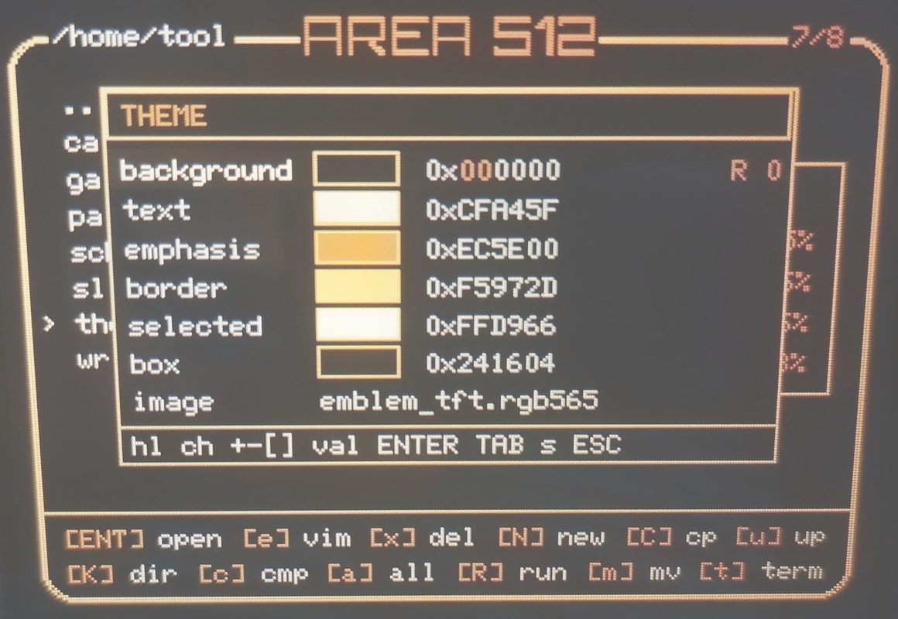
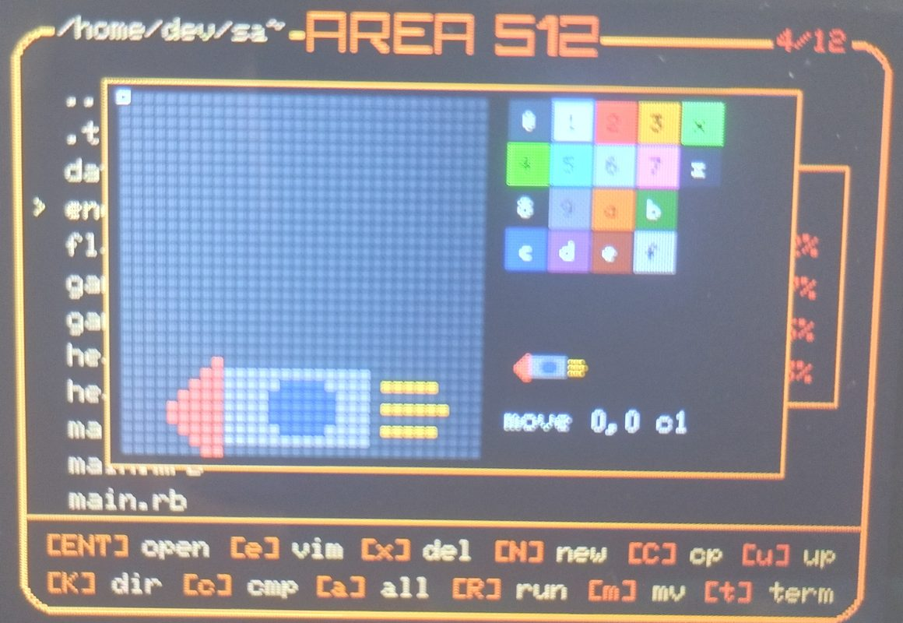
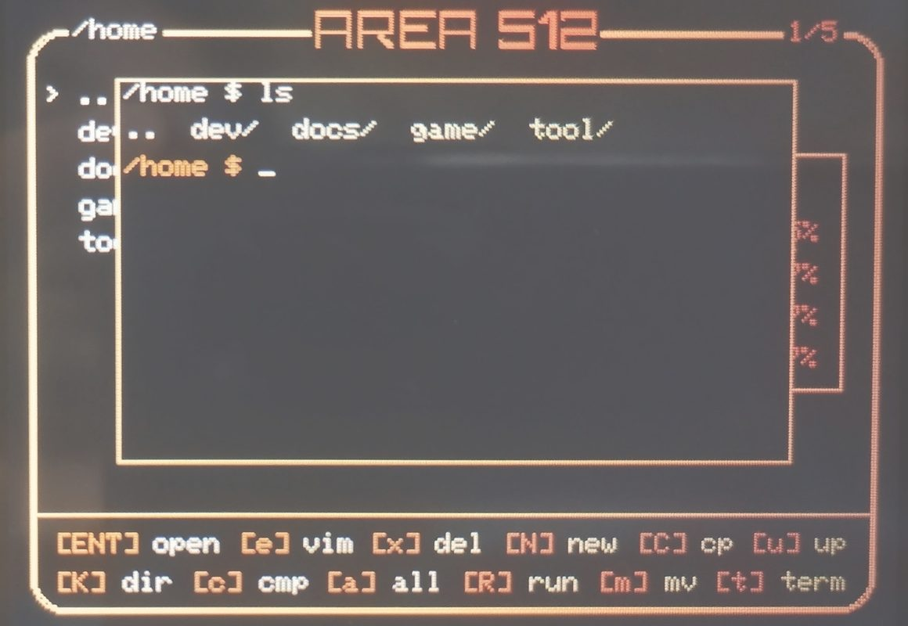

Writer
Text editor with Japanese and English input. Opens and saves one document on microSD.
Ctrl+Space switches input language. Ctrl+S saves; Ctrl+O opens; Ctrl+Q quits.
Saving is manual. File: Area512_data/data/writer.txt.
Controls ↗
Applications under /home/tool and /home/game, the terminal, and the dot image editor.

Text editor with Japanese and English input. Opens and saves one document on microSD.
Ctrl+Space switches input language. Ctrl+S saves; Ctrl+O opens; Ctrl+Q quits.
Saving is manual. File: Area512_data/data/writer.txt.
Controls ↗
26 × 26 spreadsheet with cell references, arithmetic, and range functions.
Enter edits a cell; s saves; o loads; q quits.
Functions: SUM, AVG, AVERAGE, MIN, MAX, COUNT. Data is stored on microSD.
Controls ↗
Monthly calendar with a list of events for each day.
Enter opens a day; a adds an event in day view; s saves.
The selected date is restored from the save file. Saving is manual.
Controls ↗120 × 60 pixel canvas with an eight-color palette.
Space paints; c changes color; + / − changes brush size; q quits.
The canvas is not saved when the app closes.
Controls ↗
Klondike solitaire with stock, waste, seven tableau columns, and four foundations.
Space selects or moves a card; d draws; f moves to a foundation.
High scores are saved on microSD when a card is inserted.
Controls ↗
Minesweeper with a 9 × 9 board and 10 mines.
Enter opens a cell; f toggles a flag; r starts a new game.
Mines are placed after the first cell is opened.
Controls ↗
Lunar landing game written in Python. Land on the pad without exceeding the safe vertical or horizontal speed.
Space / w uses the main thruster; a / d steer; r restarts from level 1; q quits.
Later levels have a narrower pad, less fuel, moving debris, and lower safe landing speeds.
Controls ↗
Examples of the built-in Widget components across six tabs: parts, table, chart, list, text, and modal.
Left / Right switch tabs; j / k move the focus; h / l change a value; q quits.
The Ruby source of every example is installed under /home/tool/gallery.
Widget API ↗
Edits the six interface colors and selects a background image included in the firmware.
j / k select a row; h / l select a channel; + / − adjust by 1; ] / [ adjust by 16; s saves.
Saved settings apply after reboot. The same values can be written to Area512_data/etc/theme.
Theme controls ↗
Editor for dot images (.a5d), with a sixteen-color palette and hitbox marking.
h / j / k / l move the cursor; 0–9 and a–f select a color; Space paints; s saves.
p holds the pen down so movement paints. q quits without saving.
Controls ↗
Shell sharing the current directory with the file manager. Runs, compiles, and edits files.
run, compile, vim, md, dot, irb, python-repl, and top. exit returns to the file manager.
Up / Down recall history; Tab completes commands and paths; Ctrl-F accepts the suggestion.
Command list ↗